AI Academy · Level 2 · Grade 7 · Week 16 · Student lesson
Overfitting Intuition
Learn to understand, design, build, test and explain AI systems responsibly.
Project: Transparent Book Recommender
Before you start
Week 11: judge transfer on cases not used to choose the rule.
Plan time to read, investigate and explain. Keep predictions separate from observations.
Student lesson · 1 of 18
Your mission
Start with the target: Compare training and validation evidence for model capacity. Try the recall before opening notes.
Your learning target
I can compare training and validation evidence for model capacity.
I can explain overfitting without assuming every gap proves it.
I can use a declared selection rule instead of perfect training fit.
Remember before reading
Close your notes first. A rough first answer helps us choose the right starting point; it is not a score for your ability.
Without opening the old lesson, explain one key idea from Choose Informative Questions. Give an example and a mistake that the idea helps you avoid.
Without opening the old lesson, explain one key idea from Types of Classification Error. Give an example and a mistake that the idea helps you avoid.
Without opening the old lesson, explain one key idea from Human Classifier Simulation. Give an example and a mistake that the idea helps you avoid.
After trying, check the relevant lesson or ask your teacher. Change the part of your explanation that the evidence shows was wrong.
Week 16: Overfitting Intuition
A rule that memorizes examples may fail on new cases.
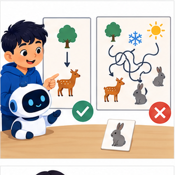
THINKER MISSION
Contrast a simple rule with a seven-exception rule.
Thinker name and date:
Readiness for the connected explanation
Can a zero training error guarantee good validation performance?
This week’s end goal
By the end, I can use development performance rather than training fit alone to choose model complexity.
Student lesson · 2 of 18
Notice the evidence
Investigate the supplied Overfitting Intuition case. Separate observations, given facts and assumptions before choosing an explanation.
PICTURE STORY
Notice → Predict → Explain
Begin with visible evidence. Do not explain more than the picture and information support.
Start with this puzzle
MYSTERY
The learners must use overfitting intuition to solve a problem. What information do they have? What decision or calculation do they make? What would count as evidence that it worked?
Three observations (what you can point to):
My prediction and the clue supporting it:
A closer explanation
A more flexible model can represent complicated relationships and accidental details. Capacity can help when there is enough relevant evidence, but perfect training performance is not the goal.
Compare training and validation using the same metric while checking leakage and representativeness.
Use fictional classroom data throughout this investigation. Keep the task, units, reference labels and data split visible as you reason.
Earlier weeks supplied the model-building process; this week examines overfitting and model capacity.
Student lesson · 3 of 18
See how it works
Follow the mechanism for Overfitting Intuition. Connect each labelled input, deciding step and result.
VISUAL MECHANISM
Input → Process → Output
Trace the information. At each stage, ask what changed and how you could test it.
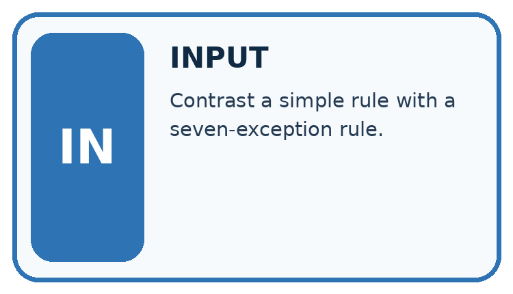
↓
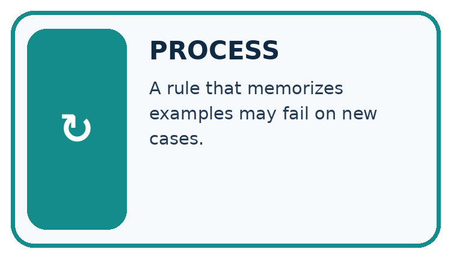
↓
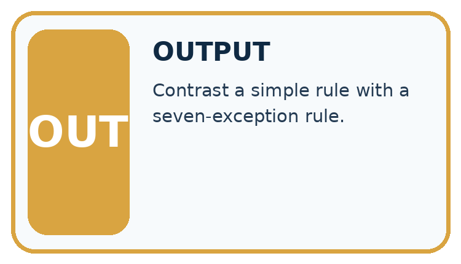
Which stage could fail even when the other two are correct? Explain:
A closer explanation
On the same regression split, a constant has training MAE 5 and validation 6, a line has training 2 and validation 3, and a highly flexible curve has training 0 and validation 8. Under smallest validation MAE, choose the line.
The curve has the lowest training loss but the worst validation result.
Before continuing, underline the decision rule and circle the evidence that supports the conclusion. Explain the example to a partner without replacing the counts or conditions with a stronger claim.
Keep the distinction between an observed result and a proposed next step.
Connect the picture and the explanation
Point to the input, the deciding step and the result in this week’s visual. Explain the same step in ordinary words. A picture helps when you can say what each part represents.
Student lesson · 4 of 18
Compare the cases
Compare the supplied cases for Overfitting Intuition. Identify the detail that changes the conclusion.
The case to investigate
CASE GALLERY
Four Tests, Four Kinds of Evidence
A system is not understood until it survives more than one comfortable example.


The normal case
NORMAL CASE: predict and name evidence. BOUNDARY CASE: predict and name evidence.


Check missing information
MISSING INFORMATION: predict and name evidence. TRANSFER CASE: predict and name evidence.
Which case is most likely to reveal a hidden assumption? Why?
Change one thing in the pictured case
Change one thing
Change: Complex’s validation error becomes 2 on a newly documented, fair development comparison.
Predicted result
Prediction: The stated rule now selects Complex.
Why the result follows
Reason: The rule compares validation errors; it does not ban complex models.
Student lesson · 5 of 18
Words that unlock the idea
Use the vocabulary of Overfitting Intuition to explain a concrete decision, rather than only memorising definitions.
VOCABULARY LAB
Words You Can Use to Reason
A definition matters when you can recognize the idea, use it, and contrast it with a near-miss.
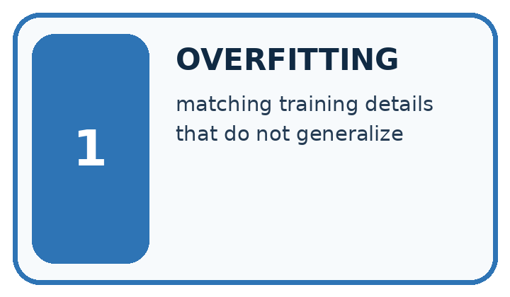
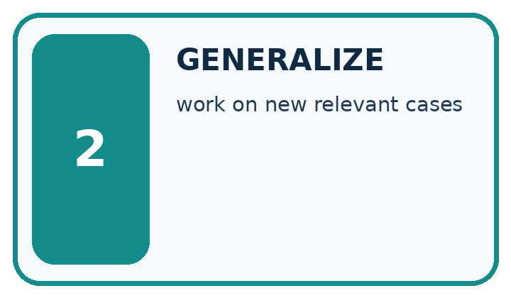
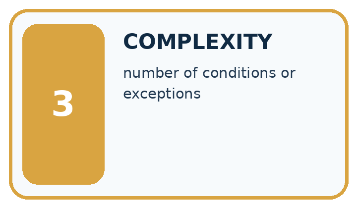
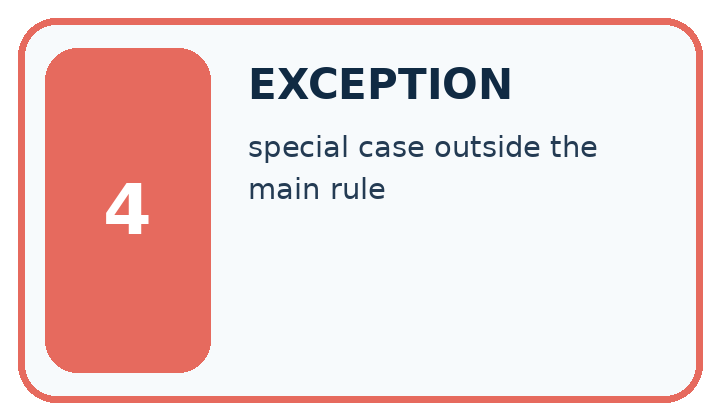
| Word | My own example | Not this / boundary |
|---|---|---|
| overfitting | Adapting too closely to development examples so performance does not transfer well to new relevant cases. | |
| generalize | Perform usefully on new relevant cases beyond those used to develop a system. | |
| complexity | The amount of structure, work or resources a method requires, measured in a stated way. | |
| exception | A condition that requires handling outside the usual path. |
Words used in the closer explanation
| Word | Meaning |
|---|---|
| Capacity | Flexibility of a model to represent patterns |
| Underfitting | Failing to capture useful structure |
| Generalization | Performance on relevant unseen examples |
Student lesson · 6 of 18
Follow a worked example
Follow the worked trace for Overfitting Intuition, predict a step, then compare with its explanation.
WORKED EVIDENCE
Reason Step by Step
Predict first. Then check each step. A correct answer without visible reasoning is incomplete evidence.
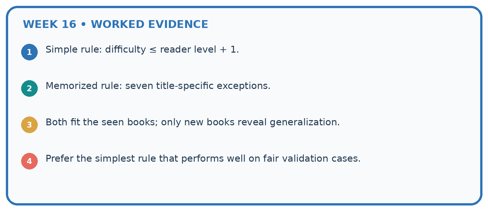
1. Simple rule: difficulty ≤ reader level + 1.
2. Memorized rule: seven title-specific exceptions.
3. Both fit the seen books; only new books reveal generalization.
4. Prefer the simplest rule that performs well on fair validation cases.
Recalculate, retrace, or restate the reasoning in your own representation:
CHECK Did the evidence answer the exact question? Did the total, path, or source record stay consistent?
A closer explanation
Overfitting and model capacity at a glance
Learn from the worked case
Cover the result before checking it. Say what is given, choose the procedure, and follow one step at a time. Then uncover the result and explain your first mismatch. Ask why a step is allowed, not only what number it produces.
A pictorial worked case: Overfitting Intuition
A fictional project compares three book-length prediction models on the same development sets.
The facts we will use
Supplied facts
Mean absolute errors in pages: Simple training 5, validation 6; Medium training 2, validation 3; Complex training 0, validation 7.
Supplied facts
Select lowest validation error; untouched final tests are not used for selection.


Read the picture one step at a time
Why this result follows
Why the result follows
A flexible model can fit quirks of its training set without predicting new examples well. Here Complex’s training success occur togethers with the worst validation error.
The numbers are invented comparisons, not a claim that complexity always hurts. Choosing Medium uses development evidence; its validation score must not be advertised as an untouched final-test result.
What this example does not establish
Keep the stated limit
A single small validation set may be noisy; selection evidence does not prove future population performance.
Keep the stated limit
Read the labelled picture: Does zero training error justify choosing Complex in the original record?
Keep the stated limit
Change one thing: Complex’s validation error becomes 2 on a newly documented, fair development comparison. Predict the result before checking the explanation. What remains the same?
Student lesson · 7 of 18
Find and repair a mistake
Find the unsupported step in the Overfitting Intuition claim and explain a repair using the supplied evidence.
Find the first error
ERROR DETECTIVE
Compare → Diagnose → Repair
Do not patch the answer. Find the earliest unsupported assumption, wrong step, or weak evidence.
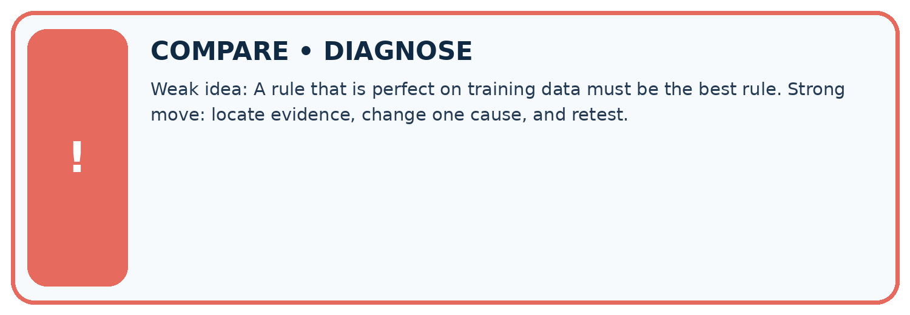
| Evidence record | Expected | Actual | Likely cause / next test |
|---|---|---|---|
| normal case | works | ||
| boundary case | stated rule | ||
| missing input | safe response | ||
| fresh transfer | generalizes |
Repair one cause. Why is this repair better than changing several things?
A closer explanation
A simpler model is not always better. If a flexible candidate has better valid evidence under the declared rule, keep that evidence visible.
Model capacity is one part of an experiment, alongside features, sample size, label quality and the split.
Student lesson · 8 of 18
Practise together
Practise Overfitting Intuition with support, then explain the deciding step in your own words.
LOGIC STUDIO
Trace Before You Run
Block code, pseudocode, tables, and diagrams are different ways to expose the same reasoning.

SET evidence_record PREDICT expected_result RUN one normal case and one boundary case COMPARE actual_result with expected_result IF different: locate first cause; change one factor; RETEST EXPLAIN result, limitation, and next safe step
Trace one input. Which line changes the state or chooses a path?
A closer explanation
Change one development factor at a time: simplify the candidate, improve data coverage or adjust a declared regularization setting. Refit on training and compare on validation.
Do not remove difficult valid examples or repeatedly search the test for a favorable result.
Practise with less help: Interpret a gap
Use workbook W2 for the connected example “Overfitting and model capacity”. First fill the input and rule boxes. Try the middle steps before asking for a hint. After a hint, try the next step yourself.
| Plan | Do | Check |
|---|---|---|
| What is given? Which rule or procedure applies? | Record each intermediate step. | Does the result follow? What remains unknown? |
Explain your trace to a partner. Your partner points to one step to check. Swap roles on the next case. Each person writes their own explanation.
Check your reasoning
Use the worked case for Overfitting and model capacity. Proposed explanation: “A final answer is enough”. Decide whether this explanation is supported.
Point to the step or supplied fact that decides; explain your repair if needed.
Answer on your own before discussion. If you are unsure, say which step you need help with.
Explain the picture
Does zero training error justify choosing Complex in the original record?
This is supported practice. Keep the separately named independent case for an attempt before feedback.
Student lesson · 9 of 18
Run the investigation
Investigate Overfitting Intuition. Record the prediction, actual observation or labelled paper trace, explanation and next test separately.
EVIDENCE LAB
Predict → Test → Record → Explain
Keep expected and actual results separate. Surprises are useful data when recorded honestly.
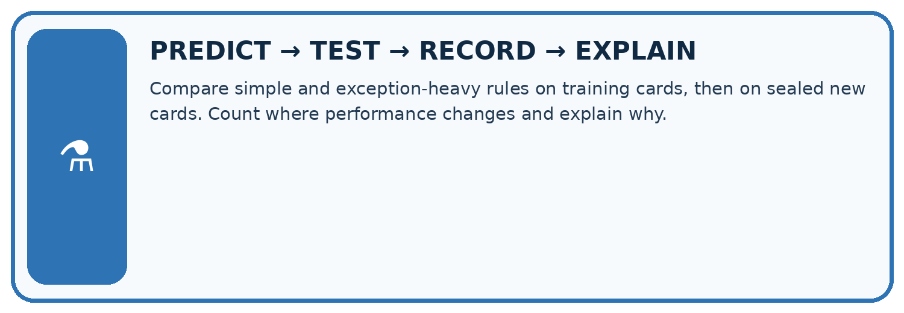
Compare simple and exception-heavy rules on training cards, then on sealed new cards. Count where performance changes and explain why.
| Test / input | Prediction | Actual | Evidence / calculation | Change or keep? |
|---|---|---|---|---|
| normal | ||||
| boundary | ||||
| missing | ||||
| fresh transfer |
What did the hardest test teach you that the normal test did not?
Plan → try → check
Before trying: what do I expect, and why? While trying: which step could first go wrong? Afterwards: what did I actually observe, and what should change? Keep “not run” if you only traced the procedure.
Student lesson · 10 of 18
Build your understanding
Move from recall to tracing, diagnosis and transfer in Overfitting Intuition. Explain why each step is justified.
MASTERY
From Knowing the Word to Owning the Idea
Move upward only when you can produce evidence without copying the worked example.

1 • NAME: Define the concept without repeating the textbook.
2 • TRACE: Show the information, state, branch, calculation, or evidence path.
3 • APPLY: Solve a different example independently.
4 • CHALLENGE: Find a boundary case, counterexample, or unfair outcome.
5 • EXPLAIN LIMITS: Say when the result should not be trusted or used alone.
My strongest evidence of independent understanding:
Student lesson · 11 of 18
Connect your project
Apply this week’s idea to Transparent Book Recommender. Keep an annotated decision and the evidence supporting it.
CUMULATIVE PROJECT
Transparent Book Recommender
Every week adds one inspectable piece. The system must show how it reached a result.
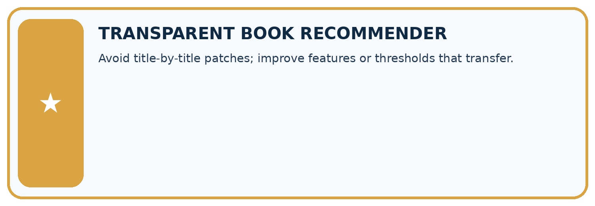
THIS WEEK’S CHECKPOINT Avoid title-by-title patches; improve features or thresholds that transfer.
Trace the system
SYSTEM MAP Reader need → allowed inputs → transparent rule or score → ranked candidates → explanation → test record → human decision
What will you add, change, or verify in the project this week?
What should remain under human control?
Responsible design
RESPONSIBLE DESIGN Collect only necessary information. Show uncertainty and limits. Never confuse a ranking with a fact about a person.
Evidence for your project
Compare recommender revisions on fixed development cases, reserving new cases for the final presentation.
Student lesson · 12 of 18
Show what you know
Use a genuinely new case for independent evidence. Previously discussed examples remain practice; use the separately named independent case before feedback.
Independent evidence
INDEPENDENT MASTERY PROOF
Explain • Transfer • Test • Defend
Complete this page without copying the worked example. Your reasoning matters more than decoration.
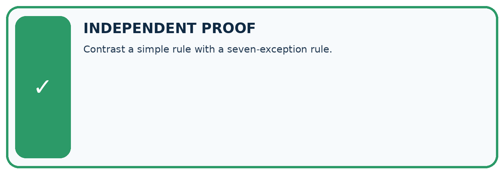
Try a more demanding case
CHALLENGE Contrast a simple rule with a seven-exception rule.
1. My fresh example, trace, calculation, or design:
2. My evidence that it works (include a boundary or missing-data case):
3. One limitation, fairness concern, or situation needing human review:
Check your explanation
SELF-CHECK □ I explained the mechanism □ I used evidence □ I tested a fresh case □ I named a limitation □ I can answer ‘why?’
Student lesson · 13 of 18
Study a complete case
Revisit the complete Overfitting Intuition case for supported practice. Repeated examples do not become fresh assessments.
Week 16 Worked case
Use the supplied details to practise the weekly concept before attempting the independent question. This case extends the illustrated lesson.
The situation
Rule A memorises six training book names. It scores 6/6 familiar and 2/6 new. Rule B uses relevant traits but is untested.
The question
What does the evidence support?
Worked explanation
A shows weak transfer. B might generalise better but requires testing; simplicity is not proof.
Explain it in your own words
Which detail supports the answer, and why does it matter?
Trace the supplied case visually
Perfect recall can hide weak transfer
| Evidence or stage | Value or result |
|---|---|
| Familiar books | 6/6 |
| New books | 2/6 |
Rule A memorises six training book names. It scores 6/6 familiar and 2/6 new. Rule B uses relevant traits but is untested.
What does the evidence support?
A shows weak transfer. B might generalise better but requires testing; simplicity is not proof.
Student lesson · 14 of 18
Try a new case independently
Attempt the reserved new case before feedback. Record support; the earlier examples below remain additional practice.
Independent case: Apply independently
Models A training 4 validation 5, B training 1 validation 2, C training 0 validation 2. Lowest validation MAE then simpler; B is simpler than C. Choose and justify.
Attempt this case before feedback. Record any help. Earlier examples below are further practice; a case already practised with feedback cannot establish fresh transfer.
Week 16 Independent application
Close the worked explanation. Apply the idea to this different question without copying.
Rule A memorises six training book IDs. Rule B uses a relevant topic feature. Why might A fail on a new ID? What test is needed?
My answer, with a trace, calculation or supporting evidence
Create and test
Change one relevant detail. Predict the result before testing. Include a boundary or missing-information case when it helps reveal a limit.
My changed input and expected result
Connect to your project
Avoid title-by-title patches; improve features or thresholds that transfer.
The evidence I will keep
Your teacher has the independent answer and scoring criteria. Complete the matching workbook week to keep your practice evidence together.
Transfer practice from the original programme
Rule A memorises eight training IDs and gets 8/8 training, 2/8 validation. Rule B uses genre and gets 6/8 training, 6/8 validation. Which is preferable on this evidence, and what test remains?
Use feedback to improve
Attempt the independent case before hints. Record whether you worked alone, used a hint or followed a model. After feedback, fix the first unsupported step and explain why it changed.
A later check uses a changed case, not a copied answer.
Student lesson · 15 of 18
Your lesson route
Use this map to navigate Overfitting Intuition, connect the goals to tasks and keep one evidence record for each attempt.
Start with this question: A fictional project compares three book-length prediction models on the same development sets.
| By the end, I can | How I will show it |
|---|---|
| Compare training and validation evidence for model capacity | Explain the deciding step, show a trace or test, and state one limit. |
| Explain overfitting without assuming every gap proves it | Explain the deciding step, show a trace or test, and state one limit. |
| Use a declared selection rule instead of perfect training fit | Explain the deciding step, show a trace or test, and state one limit. |
Remember → watch and explain → try with help → investigate → try independently → keep project evidence. Your teacher may spread this lesson across several classes.
Keep your first prediction. Compare it with what the evidence shows and explain any change.
Student lesson · 16 of 18
Finish and return
Explain Overfitting Intuition without notes, identify a remaining question and plan a later check with a changed case.
Close your notes. Explain this goal in your own words: Compare training and validation evidence for model capacity
If you are unsure, return to the worked picture and explain one arrow. If you are ready, change an input or assumption and justify your prediction.
Save your workbook evidence. At the next review, try a different case before opening your old answer.
Student lesson · 17 of 18
Supported practice, repair and portfolio
Attempt supported questions before using hints or feedback. Review a missing building block, then keep the completed work.
Use this supported practice once, in the browser or on paper. Keep the reserved independent assessment for a separate first attempt before teacher feedback.
A fictional project compares three book-length prediction models on the same development sets.
Practice 1: explain the deciding evidence
Which labelled step matches this detail? Freeze the selection, then evaluate new reserved cases.
1. Final evaluation
2. Training comparison
3. Choose for development
4. Validation comparison
Hint · try first
Hint if needed: Read the steps in the pictorial case. Match the supplied detail to the stage that performs or records it.
Feedback · compare after trying
After your attempt, compare with the supported explanation: Final evaluation Freeze the selection, then evaluate new reserved cases. A flexible model can fit quirks of its training set without predicting new examples well.
Here Complex’s training success occur togethers with the worst validation error. The numbers are invented comparisons, not a claim that complexity always hurts.
Choosing Medium uses development evidence; its validation score must not be advertised as an untouched final-test result.
Practice 2: explain the deciding evidence
Changed case · predict first
Changed-case practice: Complex’s validation error becomes 2 on a newly documented, fair development comparison. Which conclusion is supported by the supplied facts?
1. We can decide the result without examining the changed input or the procedure.
2. This one example guarantees correct results for every future input.
3. The stated rule now selects Complex.
Hint · try first
Hint if needed: Use the changed condition and the deciding step in the pictorial trace. The answer must say what follows from those facts.
Feedback · compare after trying
After your attempt, compare with the supported explanation: The stated rule now selects Complex. The rule compares validation errors; it does not ban complex models.
Repair a missing building block
Review Choose Informative Questions (ai-2/15). Goal: Fit a root question and leaf predictions from training examples. Short practice: Choose the best original question and explain why its more balanced split matters here..
Return to this week and explain what you changed.
Review Types of Classification Error (ai-2/13). Goal: Build a labelled confusion matrix from matched reference and prediction pairs. Short practice: Which error causes a sound book to be sent for unnecessary repair review?.
Return to this week and explain what you changed.
Review Human Classifier Simulation (ai-2/10). Goal: Construct a classifier with a stated input format, selected rule and recorded output.
Short practice: Why are J and M initially treated differently even though both are illustrated mysteries?. Return to this week and explain what you changed.
Keep your completed work
Use Download completed work in the hosted lesson to export your answers, reflections, practice feedback and code-run evidence. Open the HTML copy to read or print it.
Drafts stay in this browser when storage is available; clear drafts on a shared device.
Student lesson · 18 of 18
Visual concept journey
Explain each Overfitting Intuition graphic using its labels, deciding evidence and relevant limitation.
01. Overfitting Intuition: the case

A fictional project compares three book-length prediction models on the same development sets.
Supplied facts: Mean absolute errors in pages: Simple training 5, validation 6; Medium training 2, validation 3; Complex training 0, validation 7.
Select lowest validation error; untouched final tests are not used for selection.
Point to the given fact that matters most. Explain why it matters.
02. Follow the deciding steps

Training comparison: Complex fits training perfectly with zero error. → Validation comparison: Medium has error 3, versus Simple 6 and Complex 7. → Choose for development: Select Medium under the declared lowest-validation-error rule. → Final evaluation: Freeze the selection, then evaluate new reserved cases.
Point to each numbered stage and explain which recorded input it uses.
03. Training and validation errors

Training and validation errors. Simple: Training MAE pages = 5, Validation MAE pages = 6. Medium: Training MAE pages = 2, Validation MAE pages = 3. Complex: Training MAE pages = 0, Validation MAE pages = 7.
Read the labels and values. Explain the relationship the model shows.
04. Change one thing. Trace what follows.

Original case: Freeze the selection, then evaluate new reserved cases. Changed condition: Complex’s validation error becomes 2 on a newly documented, fair development comparison.
Expected result: The stated rule now selects Complex. Reason: The rule compares validation errors; it does not ban complex models.
Predict before checking the worked changed-case result. Name what changed and what the supplied facts allow you to conclude.
05. Connect the explanation to its limit

A flexible model can fit quirks of its training set without predicting new examples well. Here Complex’s training success occur togethers with the worst validation error.
The numbers are invented comparisons, not a claim that complexity always hurts. Choosing Medium uses development evidence; its validation score must not be advertised as an untouched final-test result.
Limit: A single small validation set may be noisy; selection evidence does not prove future population performance.
Explain the case, then point to a limit on the claim.
06. Make the idea visible in your project

Compare recommender revisions on fixed development cases, reserving new cases for the final presentation. Draw your input, deciding step, result and limit.
Supported question: Does zero training error justify choosing Complex in the original record?
Draw your project trace and justify the deciding step using evidence.